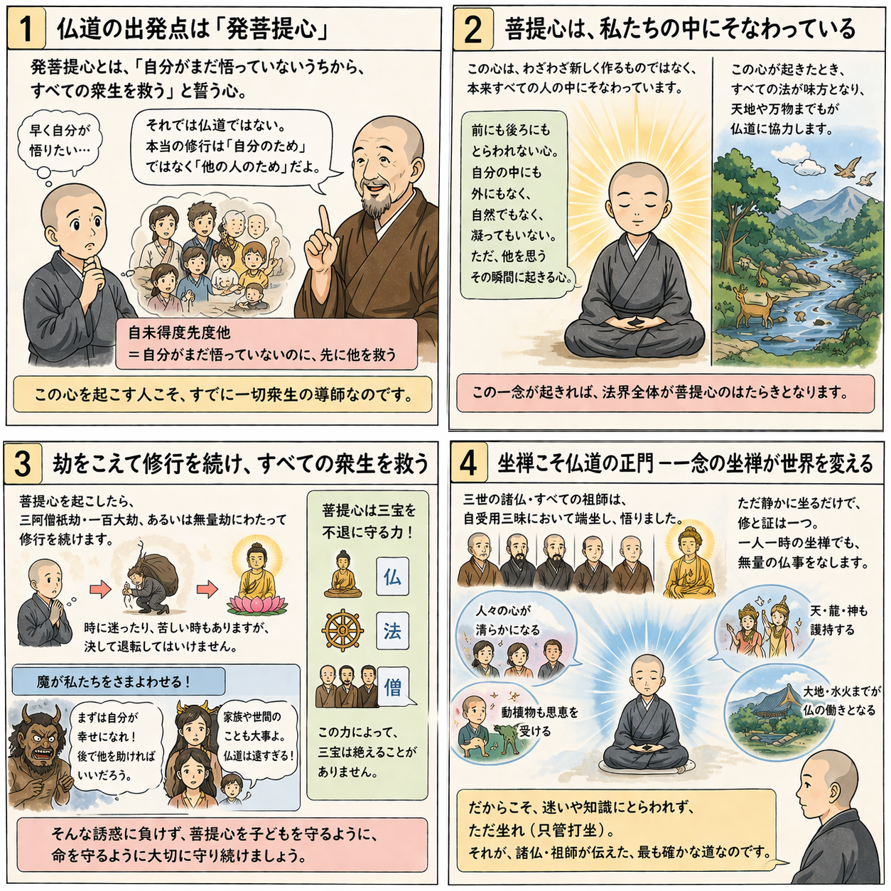

十二巻 巻一覧
正法眼藏第4 發菩提心
本ページは各巻の紹介ページです。tools/gen_web_volumes.py が doc/正法眼蔵.txt から要点の短い抜粋を載せています（全文の引用ではありません）。
出典（原文）: https://shomonji.or.jp/zazen/doc/genzou.html
原文・現代語訳の全文は 全文ページを参照してください。
この巻の紹介（概要）
道元『正法眼蔵』十二巻の第4篇「發菩提心」です。禅籍・経典への引用や語の行間が重なりやすいので、一度ですべてを要約に還元しない読み方を推奨します。問答 Bot では巻スコープにこの題名を含めると応答が安定しやすいことがあります。
語彙の足場
- 題名語：巻題「發菩提心」は、道元が本章で特に扱う論点の看板です。辞書義だけに固定せず、原文中の用例で意味を確かめます。
- 引用と典故：公案・経文の引用は、一字一句の照応（何に答えているか）を押さえると全体が見えやすくなります。
- 学び方：抜粋だけでも音読し、分からない箇所は印を付けて後から問うとよいです。
原文（要点の抜粋）
当巻の冒頭付近からの短い抜粋です。長い引用は載せていません。全文は全文ページを参照してください。出典はリポジトリ内 doc/正法眼蔵.txt です。原文の参照元: https://shomonji.or.jp/zazen/doc/genzou.html
おほよそ、心三種あり。
一者質多心、此方稱慮知心（一つには質多心、此の方に慮知心と稱ず）。
二者汗栗多心、此方稱草木心（二つには汗栗多心、此の方に草木心と稱ず）。
三者矣栗多心、此方稱積聚精要心（三つには矣栗多心、此の方に積聚精要心と稱ず）。
このなかに、菩提心をおこすこと、かならず慮知心をもちゐる。菩提は天竺の音、ここには道といふ。質多は天竺の音、ここには慮知心といふ。この慮知心にあらざれば、菩提心をおこすことあたはず。この慮知をすなはち菩提心とするにはあらず、この慮知心をもて菩提心をおこすなり。菩提心をおこすといふは、おのれいまだわたらざるさきに、一切衆生をわたさんと發願しいとなむなり。そのかたちいやしといふとも、この心をおこせば、すでに、一切衆生の導師なり。
この心もとよりあるにあらず、いまあらたに歘起するにあらず。一にあらず、多にあらず。自然にあらず、凝然にあらず。わが身のなかにあるにあらず、わが身は心のなかにあるにあらず。この心は、法界に周遍せるにあらず。前にあらず、後にあらず。なきにあらず。自性にあらず、他性にあらず。共性にあらず、無因性にあらず。しかあれども、感應道交するところに、發菩提心するなり。諸佛菩薩の所授にあらず、みづからが所能にあらず、感應道交するに發心するゆゑに、自然にあらず。
この發菩提心、おほくは南閻浮の人身に發心すべきなり。八難處等にもすこしきはあり、おほからず。菩提心をおこしてのち、三阿僧祇劫、一百大劫修行す。あるいは無量劫おこなひてほとけになる。あるいは無量劫おこなひて、衆生をさきにわたして、みづからはつひにほとけにならず、ただし衆生をわたし、衆生を利益するもあり。菩薩の意樂にしたがふ。
おほよそ菩提心は、いかがして一切衆生をして菩提心をおこさしめ、佛道に引導せましと、ひまなく三業にいとなむなり。いたづらに世間の欲樂をあたふるを、利益衆生とするにはあらず。この發心、この修證、はるかに迷悟の邊表を超越せり。三界に勝出し、一切に拔群せり。なほ聲聞辟支佛のおよぶところにあらず。
迦葉菩薩、偈をもて釋迦牟尼佛をほめたてまつるにいはく、
發心畢竟二無別（發心と畢竟と二、別無し）、
如是二心先心難（是の如くの二心は先の心難し）。
自未得度先度他（自れ未だ度ることを得ざるに先づ他を度す）、
図解（4コマ・AI生成）
教義の根拠は原文・出典に従い、漫画は比喩の補助に留めてください。

深掘り（読解のコツ）
- 道元文は定義の羅列に見えても、多くの場合誤解への遮断と正伝の姿勢が背骨になっています。
- 「当体」「現成」「即」などの語が出たら、その巻独自の差別相にどう接続しているかをメモしておくとよいです。